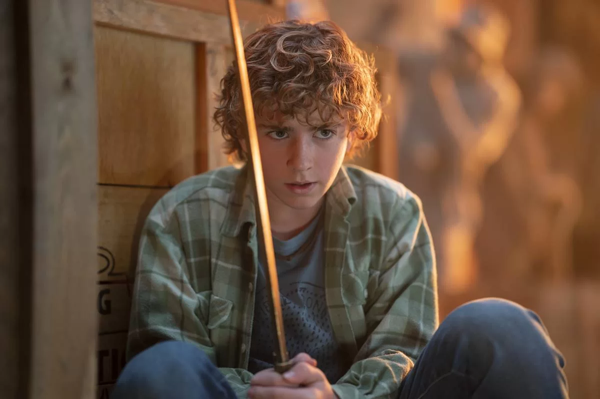
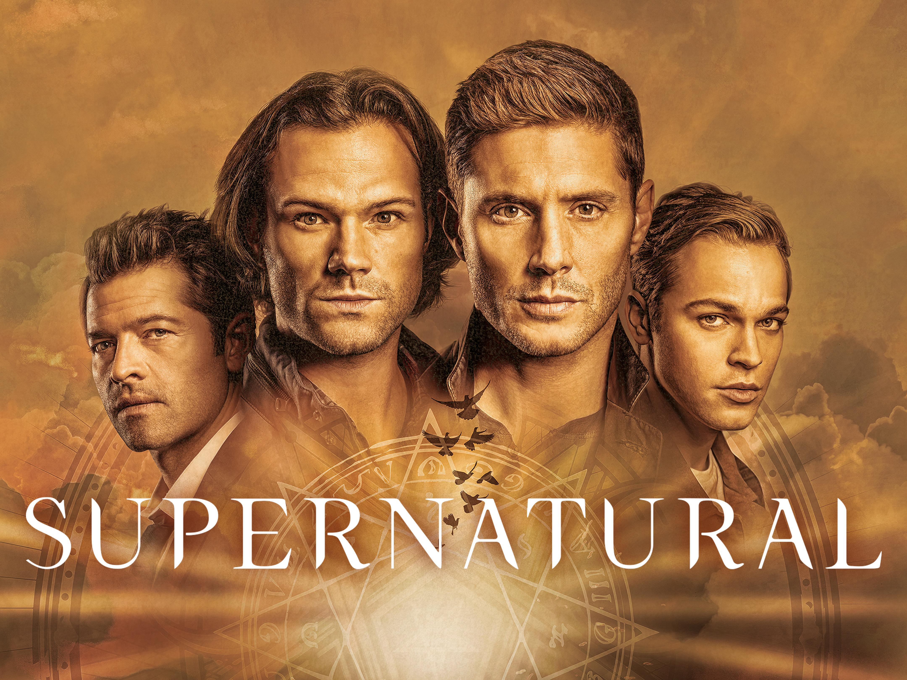

Minhas leituras favoritas envolvem ficção, aventura, romance, suspense e fantasia, as minhas sagas preferidas sao Percy Jackson e os Olimpianos escritos pelo estadunidense Rick Riordan, que retrata a mitologia grega no século XXI. O personagem principal da série é Percy Jackson, que descobre ser um meio-sangue filho de Poseidon, deus do mar a saga tem 31 livros e cada um conta uma historia completamente unica.

Maratonar Series: 👇
Minhas series favoritas envolvem terror, romance, suspense, fantasia, casos criminais e ficção as minhas series favoritas sao Supernatural e uma serie de terror e foi uma série de televisão estadunidense de fantasia sombria e urbana criada por Eric Kripke, produzida pela Warner Bros. Television em parceria com a Wonderland Sound and Vision, que estreou em 13 de setembro de 2005 na The WB Television Network, e depois tornou-se parte da programação da The CW, finalizando em 19 de novembro de 2020. A série narra a história de dois irmãos, Sam Winchester e Dean Winchester, interpretados respectivamente por Jared Padalecki e Jensen Ackles, que caçam demônios, fantasmas, monstros, vampiros e outras criaturas sobrenaturais no mundo.
